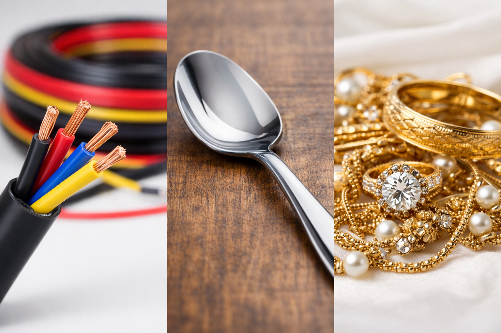
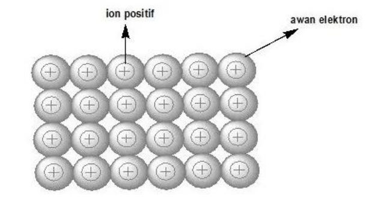
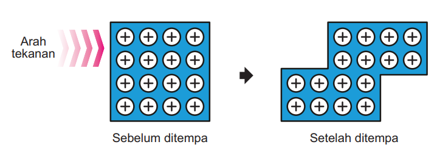

Isi identitas dulu ya:
Pada akhir Fase F, peserta didik mampu memahami sifat, struktur, dan interaksi partikel dalam membentuk berbagai senyawa serta kaitannya dengan sifat zat dalam kehidupan sehari-hari.
Dalam kehidupan sehari-hari, kita sering menggunakan benda-benda yang terbuat dari logam. Kabel listrik menggunakan tembaga atau aluminium, alat masak banyak dibuat dari aluminium atau baja, rangka bangunan dapat dibuat dari besi, dan perhiasan sering dibuat dari emas atau perak.

Berbagai benda logam dimanfaatkan karena memiliki sifat khas yang berguna dalam kehidupan sehari-hari.
Logam memiliki beberapa sifat yang menarik. Banyak logam dapat menghantarkan listrik dan panas dengan baik. Karena itu, logam digunakan sebagai kabel listrik dan alat masak. Logam juga dapat dibentuk menjadi berbagai benda, seperti sendok, panci, cincin, kawat, dan lembaran logam.
Coba bandingkan logam dengan kaca atau keramik. Kaca dan keramik dapat terlihat keras, tetapi mudah retak atau pecah ketika diberi tekanan kuat. Logam berbeda. Banyak logam dapat ditempa, dibengkokkan, atau dibentuk tanpa langsung patah.
Sifat-sifat logam tersebut berkaitan dengan susunan partikel logam dan cara elektron valensi bergerak di dalamnya. Atom-atom logam tidak berikatan seperti atom pada ikatan ion atau ikatan kovalen. Pada logam, terdapat model ikatan yang disebut ikatan logam.
Pada tahap ini, kamu belum harus menjawab dengan benar. Tuliskan dugaan awalmu berdasarkan pengamatan dan pengetahuan yang sudah kamu miliki. Untuk menemukan jawaban yang lebih lengkap, kerjakan seluruh kegiatan LKPD ini secara berurutan, mulai dari membaca materi, melakukan eksplorasi, menjelaskan hasil pengamatan, mengerjakan elaborasi, hingga menyelesaikan evaluasi.
Bagaimana ikatan logam terbentuk, dan bagaimana pembentukan ikatan logam tersebut dapat menjelaskan sifat-sifat khas logam dalam kehidupan sehari-hari?
Berdasarkan fenomena benda-benda logam di atas, tuliskan dugaan awalmu untuk menjawab rumusan masalah. Dugaan ini tidak harus langsung benar.
Untuk membuktikan hipotesismu, kerjakan kegiatan berikut secara berurutan!
Setelah seluruh tahap selesai, kamu akan dapat menjawab rumusan masalah dengan lebih lengkap dan berdasarkan konsep ilmiah.
Pada tahap Engagement, kamu sudah mengamati bahwa logam banyak digunakan sebagai kabel listrik, alat masak, rangka bangunan, dan perhiasan. Logam dipilih karena memiliki sifat khas, seperti dapat menghantarkan listrik, menghantarkan panas, kuat, mengkilap, dan mudah ditempa.
Pada tahap Exploration ini, kamu akan menyelidiki hubungan antara pembentukan ikatan logam, model lautan elektron, dan sifat-sifat logam melalui bacaan eksplorasi. Sebelum membaca kasus dan mengisi tabel, bacalah materi pendukung terlebih dahulu agar kamu memahami konsep dasarnya.
Catatan: Jawaban pada tabel dan pertanyaan eksplorasi harus didasarkan pada bacaan eksplorasi dan materi pendukung, bukan sekadar hafalan definisi.
Setelah membaca materi pendukung tentang ikatan logam dan model lautan elektron, bacalah fenomena berikut dengan teliti.
Di rumah, sekolah, dan jalan raya, kabel listrik digunakan untuk mengalirkan arus listrik. Bagian dalam kabel biasanya terbuat dari logam seperti tembaga atau aluminium. Logam-logam tersebut dipilih karena dapat menghantarkan listrik dengan baik. Ketika kabel dihubungkan dengan sumber listrik, muatan listrik dapat mengalir melalui logam. Hal ini terjadi karena di dalam logam terdapat elektron valensi yang dapat bergerak bebas di antara kation-kation logam.
Saat panci logam diletakkan di atas kompor, bagian bawah panci yang terkena api akan menjadi panas lebih dahulu. Tidak lama kemudian, bagian lain dari panci juga ikut panas. Fenomena ini menunjukkan bahwa logam dapat menghantarkan panas dengan baik. Perpindahan panas pada logam dibantu oleh susunan partikel yang rapat dan elektron bebas yang dapat bergerak di dalam struktur logam.
Emas, perak, dan aluminium dapat dibentuk menjadi berbagai benda, seperti cincin, gelang, kalung, aluminium foil, atau lembaran logam. Ketika logam diberi tekanan, lapisan kation logam dapat bergeser. Akan tetapi, logam tidak langsung patah karena kation-kation logam tetap dikelilingi dan diikat oleh lautan elektron. Inilah sebabnya banyak logam dapat ditempa, dibengkokkan, atau ditarik menjadi kawat.
Permukaan logam yang dipoles, seperti emas, perak, aluminium, atau besi, dapat tampak mengkilap. Kilap logam terjadi karena elektron bebas pada permukaan logam dapat berinteraksi dengan cahaya yang datang. Cahaya tersebut kemudian dipantulkan kembali, sehingga permukaan logam terlihat berkilau.
Petunjuk analisis: Dari keempat fenomena di atas, perhatikan bahwa sifat logam tidak hanya disebabkan oleh “logam itu kuat” atau “logam itu keras”. Sifat logam berkaitan dengan struktur ikatan logam, yaitu adanya kation logam yang tersusun rapat dan elektron valensi yang bergerak bebas membentuk lautan elektron.
Lengkapi tabel berikut berdasarkan bacaan fenomena. Tuliskan informasi penting dari bacaan, lalu hubungkan dengan konsep ikatan logam.
Catatan: Jawaban siswa tidak harus sama persis dengan kunci berikut. Jawaban dianggap benar jika siswa mampu menghubungkan fenomena dengan konsep kation logam, elektron valensi bebas, lautan elektron, dan sifat logam.
| Fenomena | Sifat Logam yang Tampak | Hubungan dengan Ikatan Logam |
|---|---|---|
| Kabel listrik dari logam | Logam dapat menghantarkan listrik sehingga digunakan sebagai bahan kabel, misalnya tembaga atau aluminium. | Pada ikatan logam terdapat elektron valensi bebas yang dapat bergerak di antara kation-kation logam. Elektron bebas ini dapat membawa muatan listrik sehingga logam menjadi konduktor listrik. |
| Panci atau alat masak logam | Logam dapat menghantarkan panas sehingga panas dari api dapat menyebar ke bagian lain panci atau alat masak. | Energi panas dapat berpindah melalui elektron bebas dan susunan partikel logam yang rapat. Karena itu, logam dapat menghantarkan panas dengan baik. |
| Logam ditempa atau dibentuk | Logam dapat ditempa, dibengkokkan, atau ditarik menjadi kawat tanpa langsung patah. | Kation-kation logam tersusun rapat dan dapat bergeser saat diberi tekanan. Walaupun bergeser, kation logam tetap diikat oleh lautan elektron sehingga logam dapat berubah bentuk tanpa mudah patah. |
| Permukaan logam mengkilap | Logam yang dipoles tampak mengkilap karena permukaannya dapat memantulkan cahaya. | Elektron bebas pada permukaan logam dapat berinteraksi dengan cahaya yang datang dan memantulkannya kembali, sehingga permukaan logam terlihat berkilau. |
Jawablah pertanyaan berikut setelah membaca materi pendukung, membaca bacaan fenomena, dan mengisi tabel eksplorasi. Jawabanmu harus menghubungkan informasi dari bacaan dengan konsep pembentukan ikatan logam dan sifat-sifat logam.
1. Berdasarkan materi pendukung, bagaimana ikatan logam terbentuk?
2. Apa peran kation logam dan elektron valensi bebas dalam pembentukan ikatan logam?
3. Berdasarkan bacaan fenomena kabel listrik, mengapa logam dapat menghantarkan listrik?
4. Berdasarkan bacaan fenomena panci logam dan logam yang ditempa, bagaimana ikatan logam dapat menjelaskan sifat logam yang menghantarkan panas dan dapat dibentuk?
5. Berdasarkan seluruh bacaan fenomena, simpulkan hubungan antara pembentukan ikatan logam dengan sifat-sifat khas logam.
Catatan: Jawaban siswa tidak harus sama persis dengan kunci berikut. Jawaban dianggap baik jika siswa mampu menjelaskan konsep dengan bahasanya sendiri dan tetap menghubungkan kation logam, elektron valensi bebas, lautan elektron, dan sifat logam.
Bacalah materi berikut sebelum mengisi tabel eksplorasi. Materi ini membantumu memahami bagaimana ikatan logam terbentuk dan mengapa logam memiliki sifat khas seperti menghantarkan listrik, menghantarkan panas, mengkilap, kuat, dan mudah ditempa.
Ikatan logam adalah ikatan yang terbentuk karena adanya gaya tarik-menarik antara kation-kation logam dan elektron valensi yang bergerak bebas. Atom logam umumnya mudah melepaskan elektron valensinya, sehingga terbentuk ion positif atau kation logam.
Elektron valensi yang dilepaskan tidak hilang, tetapi bergerak bebas di antara kation-kation logam. Elektron bebas inilah yang membentuk lautan elektron.
Inti konsep:
Kation logam bermuatan positif.
Elektron valensi bergerak bebas.
Gaya tarik antara kation logam dan elektron bebas membentuk ikatan logam.
Dalam model lautan elektron, kation-kation logam tersusun rapat dan teratur. Di antara kation-kation tersebut terdapat elektron valensi yang dapat bergerak bebas. Elektron-elektron ini seperti “lautan” yang mengelilingi kation logam.

Model ikatan logam: kation logam dikelilingi oleh elektron valensi yang bergerak bebas.
Kesimpulan: Lautan elektron bertindak seperti perekat yang menjaga kation-kation logam tetap terikat, tetapi masih memungkinkan lapisan kation bergeser ketika logam ditempa.
Logam dapat menghantarkan listrik karena memiliki elektron valensi yang bergerak bebas. Ketika logam dihubungkan dengan sumber listrik, elektron-elektron bebas dapat bergerak membawa muatan listrik melalui logam.
Elektron bebas bergerak → muatan listrik dapat mengalir → logam menjadi konduktor listrik.
Selain menghantarkan listrik, logam juga dapat menghantarkan panas. Energi panas dapat berpindah melalui getaran partikel logam dan melalui pergerakan elektron bebas. Karena itu, banyak alat masak dibuat dari logam.
Elektron bebas dan susunan partikel rapat membantu perpindahan energi panas.
Bersifat keras namun tidak mudah patah Lautan elektron pada logam bergerak bebas, tetapi terikat sangat kuat dengan ion-ion positif dari atom logamnya. Hal ini menyebabkan logam tidak akan patah, retak, atau hancur saat dipukul atau ditempa (diberikan tekanan), ion positif dan elektronnya hanya bergeser ketika diberi tekanan. Ikatan yang kuat ini juga menyebabkan jarak antaratomnya menjadi sangat dekat sehingga logam umumnya ditemukan dalam wujud padat. Hal ini menyebabkan logam mudah dibentuk dengan ditempa dan digunakan untuk perhiasan atau pajangan dengan bentuk yang indah, contohnya teralis besi yang dapat dibentuk menjadi beragam desain dan logam seperti emas atau perak yang dapat dibuat menjadi perhiasan atau pajangan dengan bentuk yang indah.

Ilustrasi pergeseran lapisan kation logam sebelum dan setelah ditempa.
Lapisan kation bergeser + lautan elektron tetap mengikat → logam dapat ditempa.
Logam tampak mengkilap karena elektron bebas pada permukaan logam dapat berinteraksi dengan cahaya. Elektron bebas tersebut membantu memantulkan cahaya sehingga permukaan logam terlihat berkilau.
Intinya: Banyak sifat logam dapat dijelaskan dengan model lautan elektron. Elektron bebas menjelaskan daya hantar listrik, daya hantar panas, dan kilap logam. Sementara itu, susunan kation logam yang dapat bergeser tetapi tetap terikat oleh lautan elektron menjelaskan mengapa logam dapat ditempa.
Pada tahap Exploration, kamu sudah membaca materi pendukung, membaca bacaan fenomena, mengisi tabel eksplorasi, dan menjawab pertanyaan tentang hubungan ikatan logam dengan sifat-sifat logam. Sekarang, jelaskan kembali hasil eksplorasimu dengan bahasamu sendiri.
Jelaskan bukan hanya jawabannya, tetapi juga alasan mengapa kamu menjawab seperti itu. Gunakan informasi dari bacaan fenomena dan tabel eksplorasi sebagai dasar penjelasanmu.
Jelaskan kembali hasil eksplorasimu seolah-olah kamu sedang mempresentasikan hasil diskusi kelompok. Gunakan informasi dari bacaan fenomena dan tabel eksplorasi sebagai dasar jawabanmu.
1. Berdasarkan materi pendukung dan tabel eksplorasi, jelaskan bagaimana ikatan logam terbentuk.
2. Dari fenomena kabel listrik, jelaskan mengapa logam dapat menghantarkan listrik.
3. Dari fenomena panci logam cepat panas, jelaskan mengapa logam dapat menghantarkan panas.
4. Dari fenomena logam yang dapat dibentuk, jelaskan mengapa logam dapat ditempa tanpa mudah patah.
5. Dari fenomena logam mengkilap, jelaskan hubungan elektron bebas dengan kilap logam.
Buka kembali hipotesis awalmu pada tahap Engagement. Setelah membaca materi, melakukan eksplorasi, dan mengisi tabel, apakah hipotesismu sudah tepat? Tuliskan perbaikan atau penguatan hipotesismu.
Setelah selesai menjawab semua pertanyaan Explanation, klik tombol di bawah ini. Jawabanmu akan disimpan dan dikunci, lalu pembahasan akan muncul sebagai umpan balik otomatis.
⚠️ Setelah menekan tombol ini, jawaban tidak dapat diubah kembali sampai jawaban akhir dikirim ke spreadsheet.
Catatan: Jawaban siswa tidak harus sama persis dengan kunci berikut. Jawaban dianggap baik jika siswa mampu menjelaskan konsep dengan bahasanya sendiri dan tetap menghubungkan pembentukan ikatan logam, kation logam, elektron valensi bebas, lautan elektron, dan sifat-sifat logam.
Pada tahap Engagement dan Exploration, kamu sudah mempelajari bahwa logam memiliki sifat khas, seperti dapat menghantarkan listrik, menghantarkan panas, mengkilap, kuat, dan mudah ditempa. Pada tahap ini, kamu akan memperdalam pemahamanmu dengan menganalisis mengapa jenis logam tertentu dipilih untuk kegunaan tertentu.
Tidak semua logam digunakan untuk fungsi yang sama. Tembaga banyak dipilih untuk kabel listrik, aluminium sering digunakan untuk alat masak dan aluminium foil, besi atau baja digunakan sebagai bahan bangunan, sedangkan emas dan perak banyak digunakan untuk perhiasan. Pemilihan tersebut berkaitan dengan sifat logam yang dapat dijelaskan melalui konsep ikatan logam dan model lautan elektron.
Tembaga banyak digunakan sebagai bahan kabel listrik karena dapat menghantarkan listrik dengan sangat baik. Pada logam tembaga, terdapat elektron valensi bebas yang dapat bergerak membawa muatan listrik. Selain itu, tembaga juga cukup mudah ditarik menjadi kawat sehingga cocok digunakan sebagai kabel.
Aluminium banyak digunakan untuk alat masak karena dapat menghantarkan panas dengan baik dan massanya relatif ringan. Aluminium juga dapat dibuat menjadi lembaran sangat tipis seperti aluminium foil. Hal ini berkaitan dengan susunan kation logam yang dapat bergeser ketika diberi tekanan, sementara lautan elektron tetap mengikat kation-kation tersebut.
Besi dan baja banyak digunakan sebagai rangka bangunan, jembatan, pagar, dan kendaraan karena kuat dan tidak mudah patah. Kekuatan logam berkaitan dengan gaya tarik antara kation logam dan elektron bebas dalam ikatan logam. Pada baja, sifat logam dapat menjadi lebih kuat karena baja merupakan paduan logam yang komposisinya diatur agar sesuai dengan kebutuhan.
Emas dan perak banyak digunakan sebagai perhiasan karena tampak mengkilap, dapat dibentuk, dan tidak mudah rusak. Kilap logam berkaitan dengan elektron bebas pada permukaan logam yang dapat memantulkan cahaya. Sementara itu, sifat mudah dibentuk berkaitan dengan kation logam yang dapat bergeser tetapi tetap diikat oleh lautan elektron.
Lengkapi tabel berikut berdasarkan bacaan kasus. Jelaskan sifat logam yang dimanfaatkan dan hubungkan dengan konsep ikatan logam.
Jawablah pertanyaan berikut berdasarkan bacaan kasus, tabel elaborasi, dan pemahamanmu tentang ikatan logam.
1. Mengapa tembaga cocok digunakan sebagai kabel listrik?
2. Mengapa aluminium dapat digunakan sebagai alat masak dan aluminium foil?
3. Mengapa besi atau baja banyak digunakan sebagai rangka bangunan?
4. Mengapa emas dan perak cocok digunakan sebagai perhiasan?
5. Simpulkan bagaimana ikatan logam membantu menjelaskan pemilihan logam untuk berbagai kebutuhan.
Setelah menjawab pertanyaan dan mengisi tabel elaborasi, klik tombol berikut. Jawabanmu akan dikunci, lalu pembahasan otomatis akan muncul.
⚠️ Setelah menekan tombol ini, jawaban tidak dapat diubah kembali sampai jawaban akhir dikirim ke spreadsheet.
Catatan: Jawaban siswa tidak harus sama persis dengan kunci berikut. Jawaban dianggap baik jika siswa mampu menghubungkan jenis logam, sifat logam, dan konsep ikatan logam.
Tahap ini berisi latihan soal umum tentang materi ikatan logam. Soal-soal berikut tidak lagi berfokus pada kegiatan sebelumnya, tetapi digunakan untuk mengukur pemahaman konsep setelah kamu mempelajari materi.
Pilih satu jawaban yang paling tepat. Setelah selesai, klik tombol Simpan Evaluasi & Lihat Pembahasan. Jawaban akan dikunci dan pembahasan otomatis akan muncul.
⚠️ Setelah evaluasi disimpan, jawaban tidak dapat diubah kembali sampai jawaban akhir dikirim ke spreadsheet.
| No | Kunci | Pembahasan Singkat |
|---|---|---|
| 1 | B | Ikatan logam terbentuk karena gaya tarik antara kation logam dan elektron valensi bebas. |
| 2 | C | Model lautan elektron menggambarkan elektron valensi yang bergerak bebas di antara kation logam. |
| 3 | A | Elektron bebas dapat bergerak membawa muatan listrik sehingga logam menghantarkan listrik. |
| 4 | D | Logam menghantarkan panas karena energi dapat berpindah melalui elektron bebas dan susunan partikel yang rapat. |
| 5 | B | Logam dapat ditempa karena kation logam dapat bergeser tetapi tetap diikat oleh lautan elektron. |
| 6 | C | Kilap logam berkaitan dengan elektron bebas pada permukaan logam yang memantulkan cahaya. |
| 7 | A | Sifat konduktor listrik logam berhubungan dengan elektron valensi bebas. |
| 8 | D | Lautan elektron menjaga kation tetap terikat meskipun lapisan kation bergeser. |
| 9 | B | Aluminium dapat digunakan sebagai foil karena dapat dibentuk menjadi lembaran tipis. |
| 10 | C | Sifat khas logam dapat dijelaskan melalui kation logam dan elektron valensi bebas dalam model lautan elektron. |
Bagian ini bukan bagian dari skor evaluasi. Refleksi digunakan untuk mengetahui pemahaman dan kesulitanmu setelah mempelajari materi ikatan logam.
Bagian mana yang paling mudah kamu pahami?
Bagian mana yang masih membingungkan atau perlu kamu pelajari kembali?
Setelah menyelesaikan evaluasi dan refleksi, klik tombol berikut untuk mengirim seluruh jawaban LKPD ke spreadsheet Guru Rusyda.